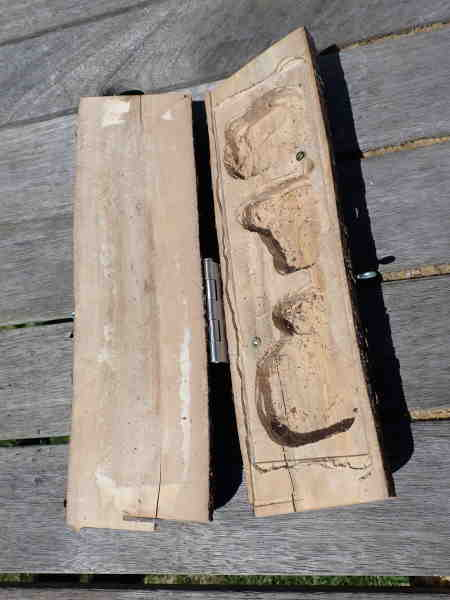

This branch weta house is very similar to the weta motel, but uses a branch rather than planks of wood.
What you need
A branch around 10 to 15cm in diameter. If the branch is too thick it will be heavy and harder to attach to a tree/fence later.
Sheet of clear plastic, a few mm thick. You can buy these from bunnings. Also some small screws or glue to attach it.
A hinge for the door (ideally galvanised so it doesn't rust).
A hook and catch to keep the door closed.
A couple of longer nails to attach the house to a tree or fence.
Tools
Pencil or pen
A saw. We had a drop/mitre saw but you can use a hand-saw or a circular saw.
Router to make the indents for the weta to live in and to make an indent to put the plastic window into. If you don’t have a router to make an indent for the plastic window you can just attach the plastic window and then put packing, like the spongy strips used to seal windows, around the side to block light (or you can probably make do without any packing). You could chisle out the areas where the wetas live.
Drill and a range of drill bits
Hammer & screwdrivers
A craft knife or some other way to cut the plastic sheet
How to make the branch weta house
Cut the branch in half vertically. We did this by attaching it to a plank of wood so we could hold it then running it through a table saw. You could also use something like a chainsaw. The cleaner the cut the easier it is to work with.
Once you have the branch in two bits follow the Weta hotel instructions, but rather than cutting the indents with a jigsaw you have to either router them out or use a chisel.